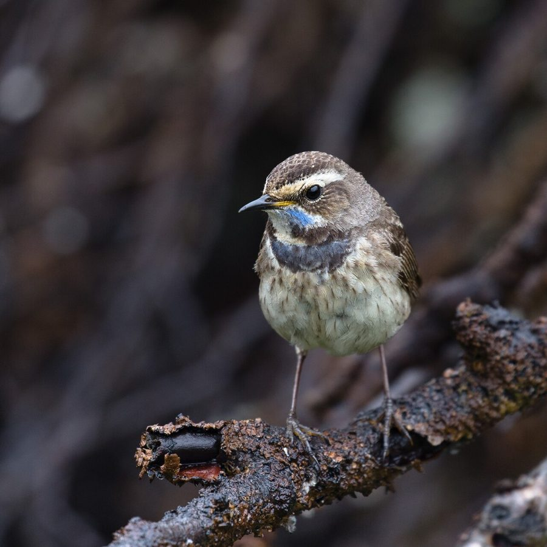

हुसैनी पिद्दाBluethroat
Luscinia svecica · Muscicapidae · BRD-0127

- Scientific name
- Luscinia svecica (Linnaeus, 1758)
- Family
- Muscicapidae
- Hindi
- हुसैनी पिद्दा
- Local names
- husaini pidda, hussaini pidda, bluethroat, blue throat, bluthroat
- Status here
- native
- Movement
- Winter visitor
- IUCN
- LC
- Review
- audited and independently read
When to look कब देखें
Winter visitor शीतकालीन प्रवासी. Expected mainly in October, November, December, January, February, March.
Arrives in October–November from breeding grounds in Europe and Asia; departs by March. Expected in reed beds and wetland margins. All migrants and visitors →
Uses and possibilities उपयोग और संभावनाएँ
Guide: Where the winter birds are: Bakhira, Parvati Arga and the Ayodhya jheels
Drawn from the documented uses in the profile below, where each is labelled traditional, current or a research lead. All uses →
हुसैनी पिद्दा / Bluethroat
Luscinia svecica (Linnaeus, 1758) — Muscicapidae
हुसैनी पिद्दा — यह एक सुंदर चिड़िया है जो यूरोप और एशिया से सर्दियों में भारत आती है। नर की गले की जगह नीली होती है — जिससे इसका अंग्रेजी नाम "Bluethroat" मिलता है। मादा और युवा पक्षियों की गले की जगह सफेद होती है। ये घना रीड़ों और तालाबों के किनारे पर रहती हैं, और अकेले छिपते-छिपाते चलती हैं।
Quick Identification त्वरित पहचान
| Feature | Description |
|---|---|
| Size | Small songbird; 13–14 cm long |
| Throat (male breeding) | Bright cobalt-blue with red or white central spot (subspecies dependent) |
| Throat (female/non-breeding) | White or pale with fine blue spotting |
| Upperparts | Brown and grey; brownish head |
| Underparts | Buff-white or creamy |
| Tail | Orange-buff basal patches visible in flight |
| Behaviour | Skulking; stays in dense reed and rush cover; often on ground |
Field tip: A small brown songbird with a striking blue throat (in males) or blue-speckled white throat (females), in reed beds and wetland edges during winter — is a Bluethroat. Males are diagnostic; females are trickier but show the red-orange tail bases when flushing.
हिंदी — कैसे पहचानें:
छोटी गायन चिड़िया; नर का गला नीला।
मादा का गला सफेद, नीली धब्बेदार।
पूँछ का आधार नारंगी-लाल।
रीड़ों में छिपता है।
Morphology आकारिकी
Biometrics:
| Measurement | Range |
|---|---|
| Total length | 130–140 mm |
| Wing (flattened chord) | 68–75 mm |
| Tail | 55–65 mm |
| Bill | 12–15 mm |
| Tarsus | 20–23 mm |
| Weight | 14–22 g |
Size: 13–14 cm long; wingspan 20–25 cm. Weight 14–22 g. A small songbird.
Plumage (male breeding): Uppers brown and grey. Crown and nape grey-brown. Upperparts warm brown. Most striking feature: throat patch cobalt-blue with a red or white central spot (subspecies dependent). Breast orange-buff; belly buff-white.
Plumage (female and non-breeding male): Less striking. Throat white or pale buff with fine blue spotting or flecks. Breast buff-orange; belly buff-white. Tail bases show orange-buff.
Tail: Predominantly dark brown, but base and under-tail coverts orange-buff — visible when tail is raised or in flight (diagnostic).
Bill: Thin, pointed, blackish with pale base of lower mandible.
Legs and feet: Long, pale brown or flesh-coloured.
Eyes: Dark iris; alert expression.
Subspecies variation: Multiple subspecies occur; some have red throat-spot, others white. L. s. svecica (breeding in Europe) has white throat-spot; L. s. magna (Siberian/Central Asian) has red throat-spot.
Vocalisations. Call repertoire:
- Song: Rich, melodious song with mimicry, given in early morning and late afternoon.
- Alarm call: Harsh, clicking tuck tuck tuck given when disturbed.
- Contact calls: Soft, warbling notes between birds.
हिंदी: सुंदर गायन करता है। डर से "टक-टक-टक" की आवाज़।
Behaviour & Ecology व्यवहार और पारिस्थितिकी
Skulking ground feeder: Bluethroats are secretive, staying in dense reed and rush cover. Forage on the ground, hopping and gleaning for insects.
Feeding: Primarily insectivorous:
- Small invertebrates gleaned from ground and reed stems
- Aquatic insects and larvae
- Occasionally small berries in late winter
Feeding behaviour: Active gleaner; hop along ground or up reed stems picking insects. Often in shadow of reed bed.
Territorial: Establish individual wintering territories in reed beds and wetland edges. Males sing from reed tops, especially at dawn.
Courtship and display: Males give elaborate song display on wintering grounds in early spring (February–March).
Alert: Moderately wary; skulking behaviour more than defensive alert.
Flight: Fluttering flight with distinctive orange-buff tail flashes when flushing from cover.
हिंदी: रीड़ों में छिपे रहते हैं। गाते समय रीड़ के ऊपर बैठते हैं। पूँछ का नारंगी भाग दिखाते हैं।
Life Cycle / Phenology जीवन चक्र
Winter visitor: Arrives in eastern UP from October, with main arrival November. Departs February–March, with most birds gone by March.
Breeding range: Northern and central Europe and Asia, from Scandinavia to Siberia and down to Central Asia. Breeds April–August in wetlands and reed beds.
Migration: Long-distance migrant. Primarily nocturnal migrant.
Wintering: Solitary on individual reed beds and wetland margins. Returns to same sites year after year.
Moult: Complete moult occurs before arrival; breeding plumage acquired on wintering grounds in spring.
Timing in UP: Early arrival October (vanguard); main arrival November; peak December–February; departure February–March.
हिंदी: अक्टूबर में आना शुरू करते हैं, मार्च तक चले जाते हैं। रीड़ों पर सर्दी काटते हैं।
Host Plants or Prey आहार
| Food Type | Examples | Capture Method |
|---|---|---|
| Small invertebrates | Insects, spiders, small beetles | Gleaning from ground and plants |
| Aquatic insect larvae | Chironomid pupae, small aquatic insects | Gleaning from reed stems |
| Small berries | Remaining winter berries | Gleaning from berry bushes |
| Occasionally small arthropods | Centipedes, small crustaceans | Gleaning from ground |
हिंदी: छोटे कीड़े और मकड़ियाँ खाता है। रीड़ों से चुनकर निकालता है।
Predators / Natural Enemies शत्रु
- Avian predators: Shikra, Merlin, Indian Eagle-Owl, Crow
- Mammalian predators: Mongoose, wild cat, feral cat
- Nest predators: Crows, weasels, snakes
हिंदी: शिकारी चिड़ियाँ इसका शिकार करती हैं।
Agricultural / Human Relevance कृषि प्रासंगिकता
Protected status: Listed under Schedule IV of the Wildlife (Protection) Act, 1972 (amended 2022). Hunting is illegal in India.
Ecological value: Important insectivore in reed beds and wetland margins; helps control aquatic insects.
Cultural significance: Known locally as "husaluni piddha" (Urdu/Hindi variant names). Valued for its song.
Wetland health indicator: Presence indicates productive reed beds and wetland edges with good insect populations.
हिंदी: यह पक्षी विधि अधिनियम 1972 के अंतर्गत संरक्षित है। इसका गायन सुंदर है।
Expected Locally स्थानीय रूप से अपेक्षित
Not a field record. Written from published accounts for eastern Uttar Pradesh. No confirmed local sighting yet — if you have seen it, that is what the atlas needs.
अभी तक स्थानीय पुष्टि नहीं। यह विवरण प्रकाशित स्रोतों से है, किसी अवलोकन से नहीं।
The Bluethroat is a winter visitor to Gonda district. Yashmita-Ulman & Singh (2025) recorded this species at Parvati Arga Bird Sanctuary in Gonda district, documenting it in their comprehensive March 2024 to February 2025 survey of the sanctuary's 140 bird species. The species is expected in reed beds and wetland edges throughout eastern UP, particularly where reeds (Phragmites) and rushes form dense stands. Bluethroats are skulking and cryptic, so they may be more common than records suggest. Males sing melodiously at dawn and dusk in early spring (February–March) before departure. Peak occurrence should be November–March. A first record would require a dated photograph with GPS coordinates and date, submitted through the About page.
Distribution वितरण
Global range: Breeds across northern Eurasia from Scandinavia to Siberia; winters from Mediterranean to southern Asia and Africa.
In India: Scattered winter visitor, particularly in northern and central regions; more common in northern plains.
In Uttar Pradesh: Regular but uncommon winter visitor to reed beds and wetland margins, particularly in northern and central districts.
In Basti district / eastern UP: Expected winter visitor to reed beds and wetland margins. October–March, though not regularly recorded. Prefers larger reed beds at oxbow lakes and Ramsar sites.
Research Questions शोध प्रश्न
- What is the population and distribution of Bluethroats in reed beds of eastern UP?
- Do individual Bluethroats return to the same reed beds across multiple winters?
- क्या रीड़ों की कटाई और जल स्तर में बदलाव से हुसैनी पिद्दा की मौजूदगी प्रभावित होती है?
- What is the song structure and dialect variation in Bluethroats wintering in eastern UP compared to other regions?
- How does Bluethroat distribution correlate with reed bed quality and extent? (A child can measure reed bed area and presence of Bluethroats.)
- Are Bluethroat populations stable or declining due to wetland loss in breeding and wintering grounds?
Similar Species मिलती-जुलती प्रजातियाँ
| Species | Key Difference | Hindi | Field Rule |
|---|---|---|---|
| White Wagtail (Motacilla alba) | Much slimmer; tail-wagging behaviour; black and white pattern | खंजन | White Wagtail is slimmer with constant tail-wagging. Different structure and behaviour. |
| Pied Bushchat (Saxicola caprata) | Resident; male all-black back; different throat pattern | पाइड बुशचैट | Bushchat is resident and has different structure and plumage. Throat pattern different. |
| Indian Robin (Copsychus saularis) | Resident; orange underparts; different throat and tail pattern | इंडियन रॉबिन | Robin is resident, more orange, and has different throat pattern and behaviour. |
| Black Redstart (Phoenicurus ochruros) | Slimmer build; orange-red tail; lacks blue throat colour; active flycatcher | थिरथिरा | Redstart is slimmer, actively flycatches, and lacks the blue throat. Tail is orange-red. |
Field rule: A small brown songbird in reed beds with a blue throat (male) or blue-speckled white throat (female), and orange-buff tail bases — is a Bluethroat. The throat pattern and orange tail bases are diagnostic.
Taxonomy & Classification वर्गीकरण
Original description. Described by Carl Linnaeus in 1758 in Systema Naturae (10th edition), page 188, as Motacilla svecica. Type locality: Sweden.
Subspecies. Multiple subspecies are recognised across the range:
- L. s. svecica — Europe (white throat-spot)
- L. s. magna — Central Asia and Siberia (red throat-spot)
- L. s. cyanecula — Damara subspecies
Family and order placement. Order Passeriformes; family Muscicapidae (thrushes and chats). The genus Luscinia contains several nightingale species.
Phylogenetic notes. Luscinia svecica is closely related to the Nightingale (L. megarhynchos) and other Luscinia species.
IUCN status rationale. Assessed as Least Concern (LC) globally. The global population is large (estimated at several million individuals) and stable. The species is adaptable to various wetland types and is not globally threatened.
Photo Gallery फोटो गैलरी
No photos yet — add field photos to media/species/bluethroat/ and run node scripts/sync_photos.js.
Wanted photos:
- [ ] Male showing blue throat with central spot (नर का नीला गला)
- [ ] Female showing blue-speckled white throat (मादा)
- [ ] In flight showing orange-buff tail bases (उड़ान में पूँछ)
- [ ] Singing from reed-top (गाते हुए)
- [ ] Close-up of head (सिर क्लोज़-अप)
References संदर्भ
- Linnaeus, C. (1758). Systema Naturae per Regna Tria Naturae. 10th ed. Laurentii Salvii, Holmiae.
- Ali, S. & Ripley, S.D. (1987). Handbook of the Birds of India and Pakistan. Vol. 5. Oxford University Press, New Delhi. Pp. 89–94.
- Grimmett, R., Inskipp, C. & Inskipp, T. (2011). Birds of the Indian Subcontinent. 2nd ed. Christopher Helm, London. Pp. 278–279.
- Yashmita-Ulman & Singh, M. (2025). A preliminary assessment of avifaunal diversity in Parwati Arga Bird Sanctuary, Uttar Pradesh, India. Journal of Threatened Taxa, 17(11): 27976–27984.
- Cramp, S. (ed.) (1988). Handbook of the Birds of Europe, the Middle East and North Africa. Vol. 5. Oxford University Press.
- BirdLife International (2023). Luscinia svecica. IUCN Red List of Threatened Species. IUCN, Cambridge.
Source file: species/fauna/birds/bluethroat.md